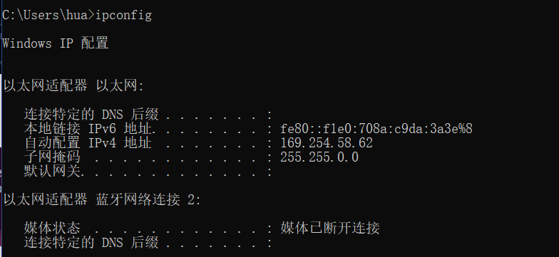
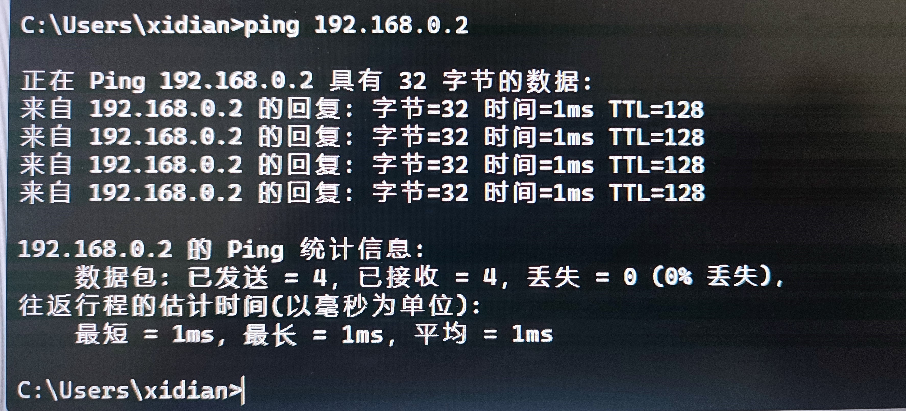

局域网下的Git服务器搭建
Git是使用最广泛的多人协作和版本管理软件。使用代码托管平台如国外的github和国内的gitee可以轻松实现多人协作和版本管理，但是如果对代码有保密需求，就必须搭建一台服务器作为私有仓库使用，其他设备访问这台服务器获取代码。这里分成两个步骤：一是git仓库的搭建；二是局域网的搭建。
Git服务器
在linux系统上搭建git服务器，参考链接https://www.runoob.com/git/git-server.html
安装git
1
sudo apt-get install git初始化git仓库
在想要创建仓库的目录下输入命令1
git init test
其中
test为项目名称，运行后会在当前路径建立test文件夹。客户端拉取远程仓库
在客户端电脑上新建本地文件夹，如果是windows系统打开Git Bash
1
git clone hua@10.193.162.88:/home/hua/Desktop/gitrepo/test其中
@符号前为服务器上的用户名，@符号后为服务器ip，:后为git仓库所在路径
局域网搭建
关于局域网的搭建，这里给出两种解决方案
方案一：校园网连接
使用校园网自动分配的ip，好处是走校园网内网，不消耗流量，只要能连上校园网就可以同步代码。问题是校园网ip不固定，动态分配，随时更新，需手动更改git仓库地址，有些麻烦。
方案二：交换机和网线物理连接
使用交换机和网线将服务器和工作机连接起来，缺点是空间受限，需要服务器和所有人的工作机都在同一个房间。也可以使用路由器wifi连接，但是wifi信号范围仍然有限。好处是速度快且可以固定ip。
使用交换机和网线将设备连接起来，分别查看ip和子网掩码，确保两台电脑处于同一子网下(即两台电脑ip地址的子网掩码为1相对应的位相同)
Windows:
ipconfigLinux:
ifconfig也可以手动设置ip和子网掩码，确保设备处于同一子网之下
控制面板->网络和Internet->网络和共享中心->以太网属性->IPv4->属性
windows系统需手动开启局域网防火墙
控制面板->系统和安全->Windows Defender 防火墙->高级设置
设置完成后

在一台电脑上ping另一台电脑的ip测试连接
